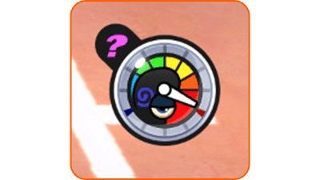
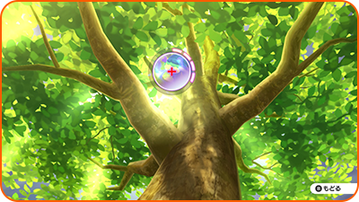
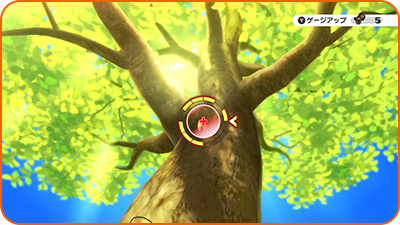
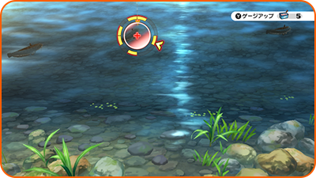

Lente Yo-kai
Utilizar la lente Yo-kai
Si algo te parece sospechoso, pulsa Ⓨ para utilizar la lente y echar un vistazo más de cerca. Puede que hasta encuentres un Yo-kai.

Modo radar
Examina una zona que parezca sospechosa y utiliza el stick izquierdo para inspeccionarla con tu lente Yo-kai.
Buscar Yo-kai
Cuando encuentres un Yo-kai, mantén la lente sobre él y el indicador se irá llenando. Una vez que esté lleno, ¡podrás ver al Yo-kai!

Cazar insectos
Centra la lente en un insecto y, a continuación, pulsa el botón A. Pulsa Ⓐ para detener el indicador giratorio. Si consigues pararlo en una de las barras amarillas, ¡el insecto será tuyo!
Utiliza sirope negro pulsando Ⓨ para aumentar el número de barras en la rueda y que así sea más sencillo cazar al insecto.

Pescar
Centra la lente en un pez y, a continuación, pulsa el botón A. Pulsa Ⓐ para detener el indicador giratorio. Si consigues pararlo en una de las barras amarillas, ¡atraparás al pez!
Utiliza cebo para peces pulsando Ⓨ para aumentar el número de barras en la rueda y que así sea más sencillo atrapar al pez.
※ Para poder pescar, necesitas una caña de pescar.
